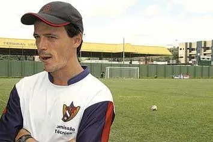
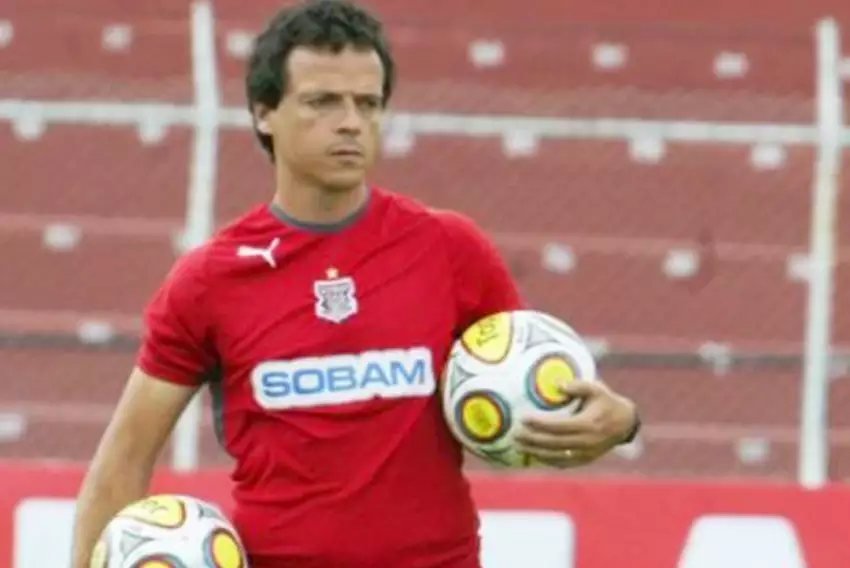
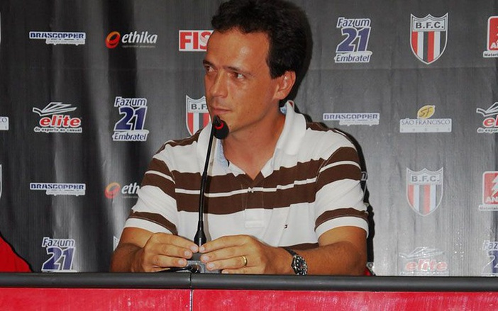
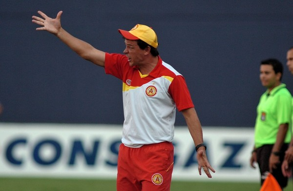
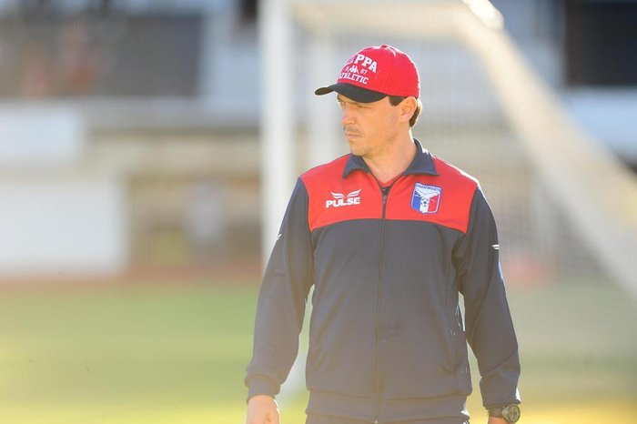
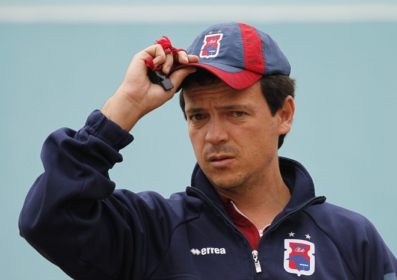

Inicio da carreira como técnico

Diniz iniciou a carreira no Votoraty em 2009, conseguindo já em seu primeiro ano como técnico os títulos da Campeonato Paulista Série A3 e Copa Paulista contra o Paulista de Jundiaí. No ano seguinte levou o clube a segunda fase da Copa do Brasil de 2010, sendo eliminado pelo semifinalista daquela edição, o Grêmio. Este foi o último jogo do técnico pelo clube, pois os donos da equipe resolveram extinguir o clube em seguida.
pelo Paulista de Jundiai

Prestigiado no interior, Fernando Diniz aceitou a proposta do próprio Paulista de Jundiaí e dirigiu a equipe na Copa Paulista de 2010. Mesmo com desconfianças da torcida acerca do seu modelo de jogo, já sem posições fixas e extremamente inovador para a época, o treinador obteve sucesso e conquistou o título da competição pela segunda vez consecutiva, batendo o Red Bull Brasil na decisão. O técnico renovou o seu contrato para o Paulistão de 2011, mas permaneceu apenas cinco rodadas e foi demitido após um início ruim no torneio.
Breve Passagem no Botafogo-SP

Fernando Diniz teve uma breve passagem pelo Botafogo de Ribeirão Preto em fevereiro de 2011, sendo demitido após disputar apenas quatro jogos.
Treinador do Atlético de Sorocaba

final de 2011, Fernando assumiu o comando do Atlético Sorocaba, com o qual atingiu a terceira colocação na Série A2 de 2012, conseguindo o acesso à primeira divisão do futebol paulista em 2013. Após dois meses à frente da equipe, o técnico dirigiu o time em dois amistosos contra a Seleção Norte-Coreana: derrota por 1–0 na primeira partida e empate sem gols na segunda.[33] Diniz foi demitido do Galo no segundo semestre de 2012, após a eliminação na Copa Paulista.
Periodo que passou comandando Guaratinguetá

Passou pelo Guaratinguetá em 2014, mas teve um fraco aproveitamento na equipe; em 18 partidas, o técnico conseguiu apenas seis vitórias.
Parada no Paraná

Anunciado pelo Paraná em julho de 2015, Diniz comandou a equipe paranaense em boa parte do segundo semestre. O treinador acabou sendo demitido em setembro, após uma derrota para o Atlético Goianiense, pela 28ª rodada da Série B. Em 17 partidas pelo clube, obteve sete vitórias, três empates e sete derrotas.